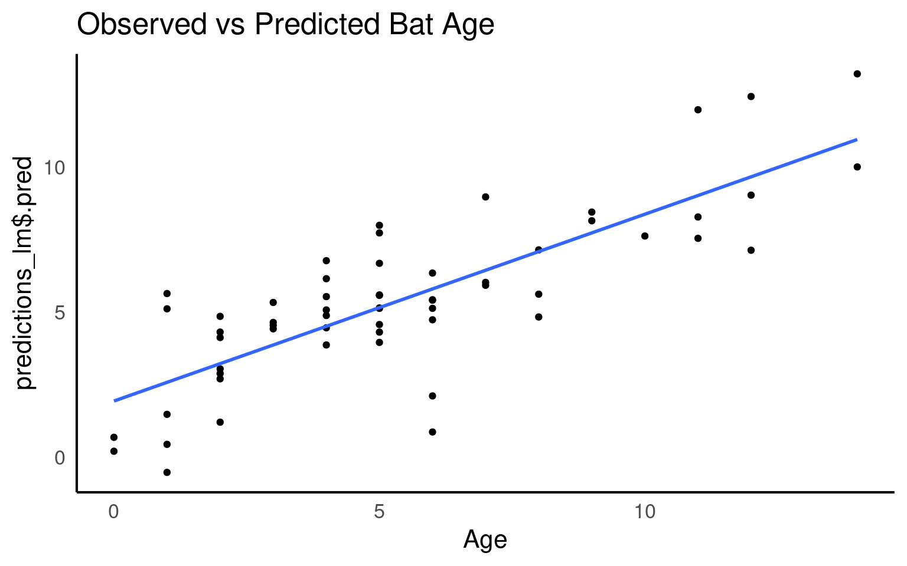
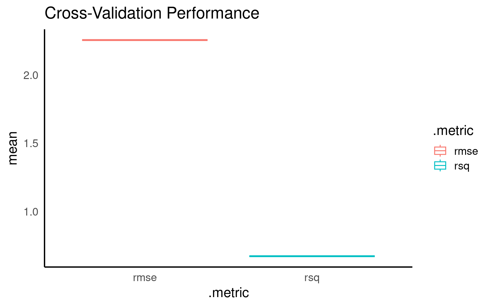
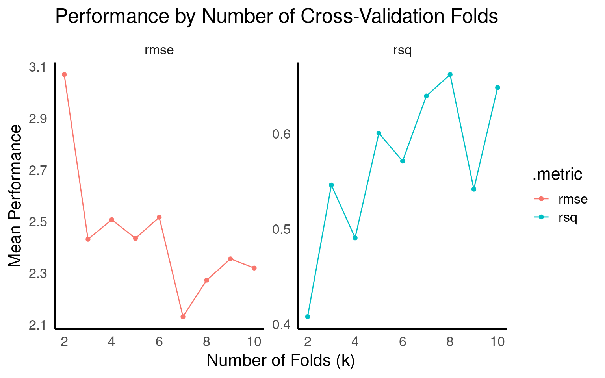
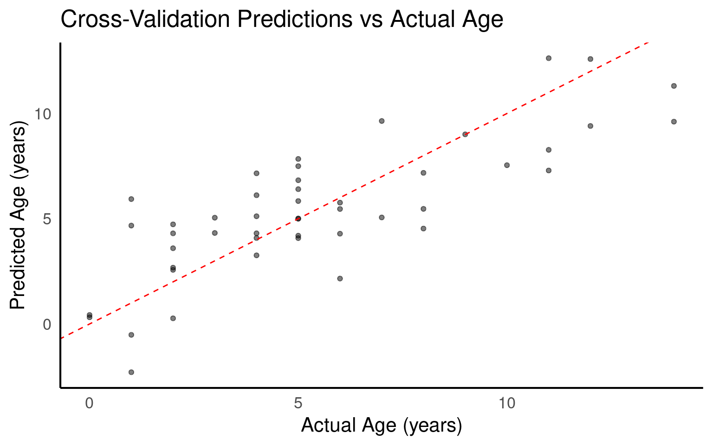
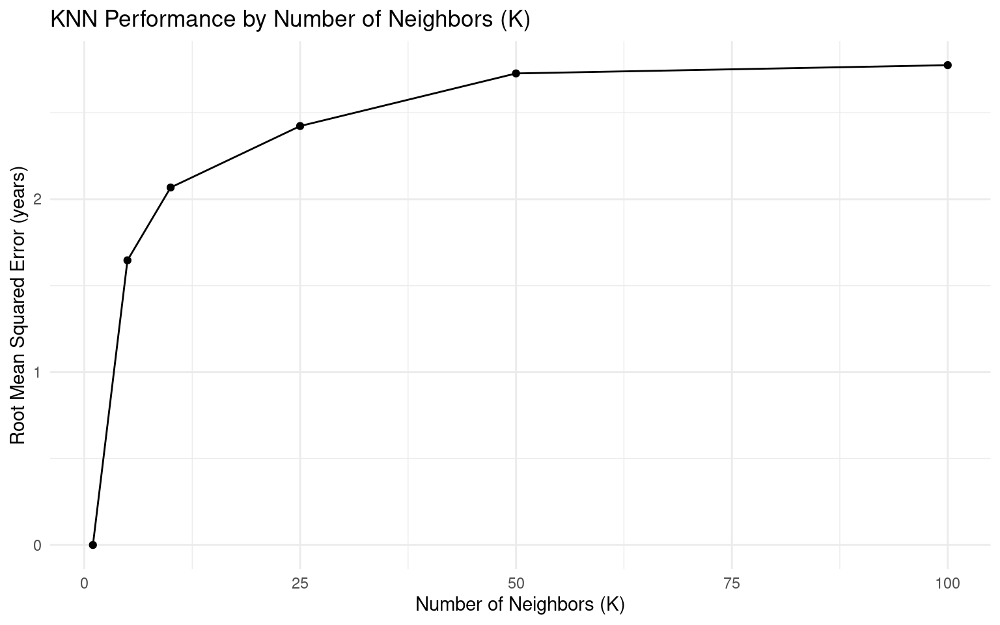
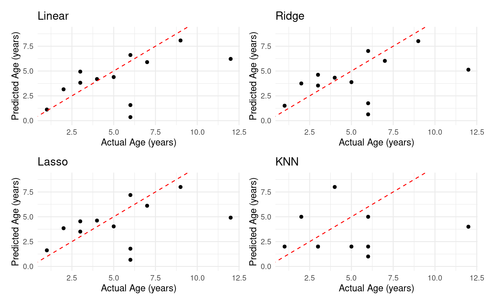
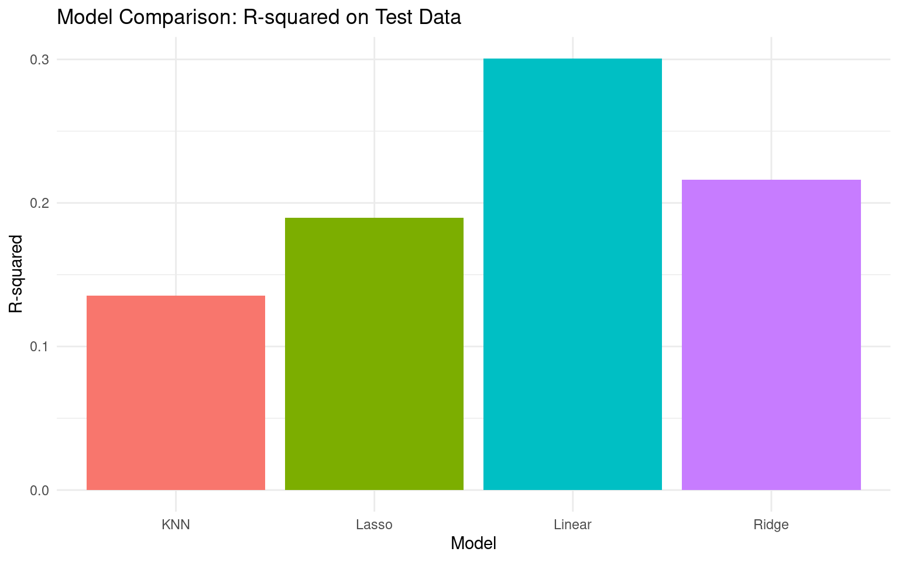
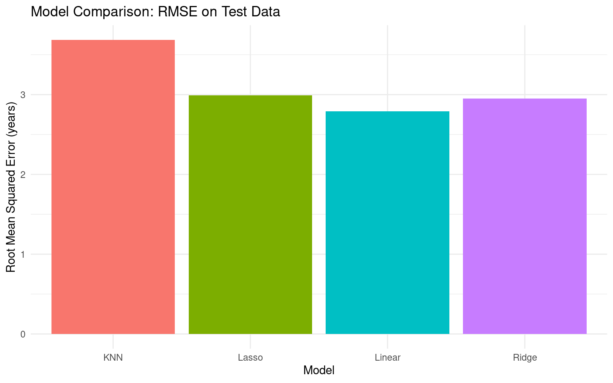
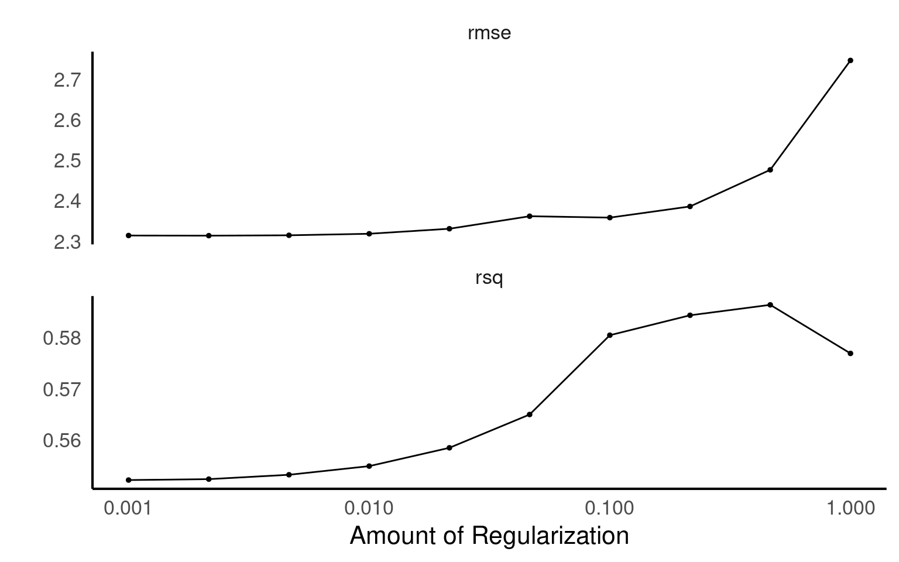
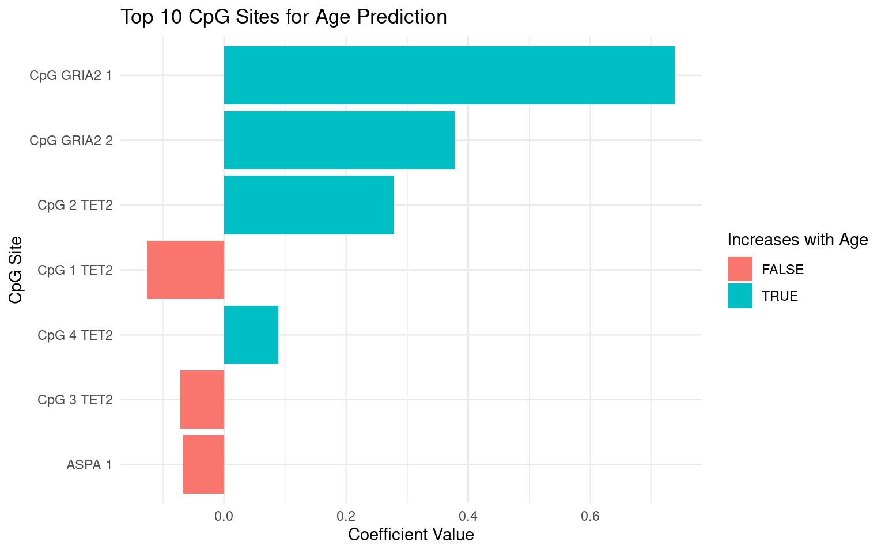

| Sample | Age | Age category | CpG 1 TET2 | CpG 2 TET2 | CpG 3 TET2 | CpG 4 TET2 | CpG GRIA2 1 | CpG GRIA2 2 | ASPA 1 |
|---|---|---|---|---|---|---|---|---|---|
| BabyBechs_SHW | 0 | Age 0-3 | 29 | 21 | 26 | 31 | 2 | 2 | 61 |
| Dd_Juv_Hamgreen | 0 | Age 0-3 | 30 | 21 | 24 | 32 | 1 | 2 | 59 |
| A2402 | 1 | Age 0-3 | 44 | 38 | 51 | 53 | 1 | 5 | 48 |
| A2414-2014 | 1 | Age 0-3 | 48 | 36 | 50 | 46 | 1 | 2 | 53 |
| A8481-2014 | 1 | Age 0-3 | 22 | 9 | 28 | 31 | 2 | 2 | 41 |
| A8522-2015 | 1 | Age 0-3 | 42 | 30 | 40 | 41 | 0 | 4 | 59 |
19 Predictive Modeling with Tidymodels and Linear Regression
In this tutorial, we introduce the tidymodels framework in R—a suite of packages specifically designed to make machine learning accessible, reproducible, and maintainable. We’ll use a real-world biological dataset examining the relationship between bat age and DNA methylation at specific CpG sites to demonstrate practical applications relevant to biological research. data; paper.
By the end of this chapter, you’ll understand how to: - Prepare biological data for machine learning using tidymodels principles - Build and evaluate linear regression models to test biological hypotheses - Implement crucial preprocessing steps like centering predictors—and understand why these steps matter for biological interpretation - Create reproducible machine learning workflows that can be applied to your own research questions
19.0.1 Why Tidymodels for Biological Research?
Biologists face unique challenges when analyzing data: complex experimental designs, non-independent measurements, and the need to connect statistical findings back to biological mechanisms. The tidymodels framework offers several advantages for biological research:
- Consistency and Reproducibility: Follows tidy data principles familiar to R users, ensuring your analysis can be replicated and shared with collaborators
- Modular Design: Separate steps for data preprocessing, model building, and evaluation—matching the careful, step-by-step approach of experimental biology
- Interpretability: Creates models that produce interpretable results, essential for connecting statistics back to biological mechanisms
- Integration with the Broader R Ecosystem: Seamlessly works with packages biologists already use for data manipulation (dplyr, tidyr) and visualization (ggplot2)
19.1 Key Components of Tidymodels
The tidymodels framework consists of several integrated packages that streamline the machine learning workflow:
Data Preprocessing with
recipes: Transform your biological data (normalising gene expression, scaling measurements, engineering features from raw biological variables) into a format suitable for modeling.Model Specification with
parsnip: Define your model type (regression, classification, clustering) with a consistent interface regardless of the underlying algorithm.Workflow Management with
workflows: Combine preprocessing and modeling steps into a reproducible pipeline—particularly valuable for complex biological analyses that require multiple transformation steps.Model Evaluation with
yardstick: Assess model performance using metrics relevant to your biological questions.Resampling with
rsample: Implement cross-validation and other resampling techniques to ensure your biological findings are robust.
In our case study with bat methylation data, we’ll demonstrate how these components work together to answer a specific biological question: can DNA methylation patterns accurately predict bat age? And we will test which model has the best predictive capability
This question has implications for understanding aging processes in mammals and potentially developing non-invasive age determination methods for wildlife biology.
19.2 Exploratory Data Analysis
By now you should be confident with exploratory data analysis and data cleaning
19.2.1 Exploratory Data Checklist
19.2.1.0.1 1. Dataset Overview
19.2.1.0.2 2. Data Quality
#####3. Variable Relationships
19.2.1.0.3 4. Feature Characteristics
19.2.1.0.4 5. Outlier Assessment
19.2.1.0.5 6. Preprocessing Needs
19.2.1.0.6 7. Modeling Implications
19.3 Defining the Model with Tidymodels
Now, we will specify and fit a linear regression model using the tidymodels framework.
Our goal is to determine if DNA methylation patterns at specific CpG sites can serve as epigenetic biomarkers of aging in bats. This “epigenetic clock” approach has been used successfully in humans and other mammals to estimate biological age.
19.3.1 Define the linear regression model
🤔 Stop and Think: Why is linear regression an appropriate starting point for this biological question? What assumptions are we making about the relationship between methylation levels and age?
Linear regression provides a straightforward approach to quantifying relationships between variables. In our bat methylation dataset, we’re assuming that changes in methylation at specific CpG sites correlate linearly with age - similar to how methylation-based “epigenetic clocks” work in humans and other mammals.
19.3.2 Preprocess the Data with a Recipe
Before modeling, we need to prepare our data appropriately. In tidymodels, this is done using “recipes” - a series of preprocessing steps applied consistently to both training and testing data.
🔍 Biological Context: In methylation studies, preprocessing steps can dramatically affect your results. The variability of methylation measurements between samples often requires normalization to reveal meaningful biological patterns rather than technical artifacts.
Why Center Predictors?
Centering a predictor variable means subtracting its mean from each value, so that the mean of the variable becomes zero. This is an important step for several reasons:
Improves interpretability of the intercept: Without centering, the intercept represents the predicted value of the response variable when the predictor is zero, which may not always be meaningful. After centering, the intercept represents the predicted value when the predictor is at its mean, which is often more interpretable.
Reduces multicollinearity: Centering can help stabilize the numerical estimation of model coefficients, especially when predictors are correlated.
Improves numerical stability: It helps prevent issues with convergence when fitting the model, especially in optimization-based methods like gradient descent.
Let’s center the predictors (methylation values for each CpG site) in the recipe:
🤔 Stop and Think: What other preprocessing steps might be helpful when working with methylation data? Would scaling (standardising) the predictors also be beneficial? Why or why not?
For methylation data, you might also consider: - Removing highly correlated CpG sites to reduce redundancy (we can see an example of this later) - Scaling (standardizing) methylation values if they have very different variances step_scaling(), step_normalize() - Transforming skewed methylation distributions - Imputing missing values if some CpG sites have gaps
19.3.3 Create a Workflow
One of the key advantages of tidymodels is the ability to combine model specification and preprocessing into a single workflow. This ensures consistency and reproducibility.
By combining these steps, you ensure that: 1. The same preprocessing steps are applied consistently to new data 2. The entire modeling process can be saved as a single object 3. Cross-validation and resampling can be performed on the complete workflow
19.3.4 Fit the Model
Now we’ll fit our model to the data, which estimates the coefficients that best describe the relationship between methylation levels and bat age.
Warning
Notice that we’re fitting the model to the entire dataset right now. In practice, we should split the data into training and testing sets first (as we’ll do later in this tutorial).
🤔 Stop and Think: What is actually happening when we “fit” a linear regression model to methylation data? What are we trying to do?
- “When fitting an ordinary regression model we attempt to find the coefficient values through the process of : ”
19.3.5 Evaluate the Model
Once we have fit the model, we can evaluate its performance using various metrics such as R² (coefficient of determination). R² tells us how well the model fits the data.
| term | estimate | std.error | statistic | p.value |
|---|---|---|---|---|
| (Intercept) | 5.4406780 | 0.2923727 | 18.6087048 | 0.0000000 |
CpG 1 TET2 |
-0.2181132 | 0.1288805 | -1.6923681 | 0.0966774 |
CpG 2 TET2 |
0.3511482 | 0.1224845 | 2.8668784 | 0.0060115 |
CpG 3 TET2 |
-0.0767500 | 0.0842944 | -0.9104996 | 0.3668425 |
CpG 4 TET2 |
0.1027242 | 0.0751684 | 1.3665866 | 0.1777498 |
CpG GRIA2 1 |
0.6817630 | 0.2250201 | 3.0297866 | 0.0038363 |
CpG GRIA2 2 |
0.3398329 | 0.2183539 | 1.5563401 | 0.1258117 |
ASPA 1 |
-0.0815015 | 0.0378477 | -2.1534049 | 0.0360377 |
🔬 Biological Interpretation: Each coefficient represents how much a one-unit change in methylation at a specific CpG site affects predicted age. Positive coefficients indicate sites where methylation increases with age, while negative coefficients show sites where methylation decreases with age.
🤔 Stop and Think: Which CpG sites appear most important for predicting age? Are there any that don’t seem significantly associated with age?
We can visualize how well our predictions match the actual ages:
# Get predictions on the training data
predictions_lm <- augment(fit_model, new_data = ch4)
# Plot observed vs. predicted values
ggplot(data = ch4, aes(x = Age, y = predictions_lm$.pred)) +
geom_point() +
geom_smooth(method = "lm", se = FALSE) +
labs(title = "Observed vs Predicted Bat Age")
19.3.6 Performance metrics
Numerical metrics help us quantify model performance. Common metrics for regression include MSE (Mean Squared Error), RMSE (Root Mean Squared Error), and R² (coefficient of determination).
mse <- mean((ch4$Age - predictions_lm$.pred)^2)
# A cleaner function for calculating MSE
mse_impl <- function(model, data, predictor) {
augment(model, new_data = data) |>
mutate(squared_error = (.pred - {{predictor}})^2) |>
summarise(mse = mean(squared_error)) |>
pull(mse)
}
mse <- mse_impl(fit_model, ch4, Age)
rmse <- sqrt(mse)
rmse
# Get more comprehensive model statistics
glance(fit_model)[1] 2.087959| r.squared | adj.r.squared | sigma | statistic | p.value | df | logLik | AIC | BIC | deviance | df.residual | nobs |
|---|---|---|---|---|---|---|---|---|---|---|---|
| 0.6449969 | 0.596271 | 2.245758 | 13.23725 | 0 | 7 | -127.1524 | 272.3048 | 291.0027 | 257.2148 | 51 | 59 |
🔬 Biological Interpretation: RMSE tells us the typical error in our age predictions in years. An RMSE of X years means our predictions are typically within X years of the bat’s actual age. R² tells us what proportion of age variation is explained by methylation patterns.
🤔 Stop and Think: What would be an acceptable error margin for age prediction in your biological context? How might this compare to other methods of age determination in bats?
19.3.7 Check Model Assumptions
Linear regression makes several assumptions that we should verify:
🤔 Stop and Think: What assumptions does linear regression make, and do our model diagnostics suggest these assumptions are met? Look particularly at: - Linearity (do residuals show patterns?) - Homoscedasticity (is residual variance constant across predicted values?) - Normality of residuals - Influential outliers
19.3.8 Challenge: Improve the Model
Now that we have a baseline model, let’s think about how to improve it:
Address Non-Linearity: Consider adding polynomial terms if the relationship between methylation and age isn’t strictly linear.
-
Handle Multicollinearity: CpG sites often show correlated methylation patterns. Consider:
- Regularization techniques (ridge, lasso) - see below
- Selecting a subset of less correlated features
🤔 Stop and Think: Based on our diagnostics, what specific improvements might help our model? What biological mechanisms might explain non-linear relationships between methylation and age?
19.4 Training and Testing Sets
A crucial step in any machine learning project is to evaluate the model on data it hasn’t seen during training. This helps assess how well it will generalise to new samples.
A typical split is 80% for training and 20% for testing.
# Extract training and testing sets
train_data <- training(split)
test_data <- testing(split)
# Check the dimensions of the splits
glimpse(train_data)
glimpse(test_data)Rows: 47
Columns: 8
$ Age <dbl> 5, 3, 10, 2, 1, 6, 9, 7, 6, 12, 4, 5, 5, 1, 8, 5, 2, 5, …
$ `CpG 1 TET2` <dbl> 58, 52, 63, 57, 44, 61, 64, 61, 43, 59, 59, 67, 54, 22, …
$ `CpG 2 TET2` <dbl> 48, 42, 55, 42, 38, 51, 57, 50, 32, 51, 50, 57, 46, 9, 5…
$ `CpG 3 TET2` <dbl> 62, 61, 69, 58, 51, 69, 72, 66, 58, 62, 65, 69, 60, 28, …
$ `CpG 4 TET2` <dbl> 56, 54, 60, 49, 53, 53, 49, 56, 70, 54, 60, 61, 54, 31, …
$ `CpG GRIA2 1` <dbl> 4, 3, 3, 2, 1, 4, 5, 7, 2, 8, 1, 4, 3, 2, 4, 1, 2, 2, 3,…
$ `CpG GRIA2 2` <dbl> 5, 4, 4, 6, 5, 5, 5, 7, 6, 4, 1, 4, 3, 2, 6, 5, 2, 3, 3,…
$ `ASPA 1` <dbl> 40, 54, 44, 61, 48, 63, 44, 55, 52, 61, 39, 47, 51, 41, …
Rows: 12
Columns: 8
$ Age <dbl> 1, 2, 3, 3, 4, 5, 6, 6, 6, 7, 9, 12
$ `CpG 1 TET2` <dbl> 48, 60, 50, 53, 59, 47, 38, 51, 66, 61, 68, 50
$ `CpG 2 TET2` <dbl> 36, 46, 42, 45, 50, 42, 27, 40, 54, 51, 58, 46
$ `CpG 3 TET2` <dbl> 50, 58, 51, 60, 70, 59, 40, 57, 68, 67, 74, 54
$ `CpG 4 TET2` <dbl> 46, 51, 49, 54, 54, 51, 42, 52, 53, 56, 61, 53
$ `CpG GRIA2 1` <dbl> 1, 2, 3, 1, 2, 3, 1, 0, 4, 3, 4, 3
$ `CpG GRIA2 2` <dbl> 2, 3, 4, 3, 3, 2, 3, 2, 5, 5, 4, 2
$ `ASPA 1` <dbl> 53, 56, 54, 47, 51, 51, 57, 47, 52, 54, 42, 43
Note
Setting a seed ensures reproducibility of your random split. Always set and document your seed value!
🤔 Stop and Think: Why is it important to evaluate our model on a separate test set? What might happen if we only evaluated performance on our training data?
Models have two competing goals: accurately capturing patterns in your data while ignoring random noise. Without a separate test set, you can’t tell if your model is actually learning generalisable patterns or simply memorizing the training examples (overfitting).
When you evaluate performance on the same data used for training:
Performance metrics will be artificially inflated
You’ll have no reliable way to predict how your model will perform on new data
You might select an overly complex model that fits noise rather than signal
# Fit the model on the training data
lm_fit <- fit(workflow_model, data = train_data)
# View the model summary
tidy(lm_fit)| term | estimate | std.error | statistic | p.value |
|---|---|---|---|---|
| (Intercept) | 5.4680851 | 0.3078735 | 17.7608149 | 0.0000000 |
CpG 1 TET2 |
-0.1356109 | 0.1425461 | -0.9513476 | 0.3472869 |
CpG 2 TET2 |
0.2877965 | 0.1289528 | 2.2317974 | 0.0314456 |
CpG 3 TET2 |
-0.0720025 | 0.0875212 | -0.8226863 | 0.4156884 |
CpG 4 TET2 |
0.0898384 | 0.0734188 | 1.2236431 | 0.2284286 |
CpG GRIA2 1 |
0.7363467 | 0.2207054 | 3.3363331 | 0.0018730 |
CpG GRIA2 2 |
0.3803990 | 0.2118667 | 1.7954638 | 0.0803315 |
ASPA 1 |
-0.0678509 | 0.0366157 | -1.8530535 | 0.0714520 |
🔬 Biological Note: Compare these coefficients to those from the full dataset model. Differences might indicate features that aren’t robustly associated with age across different bat samples.
Let’s evaluate our model’s performance on the test set:
# Calculate performance metrics for linear regression
cat("RMSE is:", sqrt(mse_impl(lm_fit, test_data, Age)))
####
# Make predictions on the test set using the linear model
lm_predictions <- predict(lm_fit, new_data = test_data)
# Combine predictions with actual values (truth) into a tibble
results <- tibble(
truth = test_data$Age, # Actual values (truth)
estimate = lm_predictions$.pred # Predicted values (estimate)
)
# Now use yardstick's rsq function to calculate R-squared
library(yardstick)
rsq_result <- rsq(results, truth = truth,
estimate = estimate)
# Print the R-squared result
rsq_resultRMSE is: 2.791151| .metric | .estimator | .estimate |
|---|---|---|
| rsq | standard | 0.300561 |
🤔 Stop and Think: How does the performance on the test set compare to the training set? If there’s a large difference, what might that indicate?
19.4.1 Cross-Validation for Robust Evaluation (K-folds)
Cross-validation provides a more robust estimate of model performance by using multiple train/test splits.
In k-fold cross-validation:
Your dataset is divided into k equally sized segments (or “folds”)
The model is trained and tested k times
Each time, a different fold serves as the test set while the remaining k-1 folds form the training set
Performance metrics are averaged across all k iterations
Original Data: [1] [2] [3] [4] [5] (5-fold example)
Iteration 1: [T] [●] [●] [●] [●] T = Test fold
Iteration 2: [●] [T] [●] [●] [●] ● = Training fold
Iteration 3: [●] [●] [T] [●] [●]
Iteration 4: [●] [●] [●] [T] [●]
Iteration 5: [●] [●] [●] [●] [T]
Typically we do this on the training data portion still - so that we have final test dataset to do an independent final check. But some people will perform this on the whole dataset, especially if sample sizes are low.
# Perform 10-fold cross-validation
#v/k same thing
folds <- vfold_cv(train_data, v = 10)
# Fit models using cross-validation
cv_results <- fit_resamples(workflow_model,
resamples = folds)
# Collect and visualize metrics
cv_metrics <- collect_metrics(cv_results)
ggplot(cv_metrics, aes(x = .metric, y = mean, color = .metric)) +
geom_boxplot() +
labs(title = "Cross-Validation Performance")
🤔 Stop and Think: What advantages does cross-validation offer over a single train/test split? How consistent are the results across folds?
19.4.2 Exploring Different Fold Numbers
The number of folds in cross-validation is a hyperparameter. Let’s explore how performance varies with different numbers of folds:
fold_numbers <- seq(2, 10, 1)
cv_results_by_fold <- map_dfr(fold_numbers, function(k_value) {
# Create cross-validation with k folds
k_folds <- vfold_cv(train_data, v = k_value)
# Fit models using cross-validation
cv_results <- fit_resamples(workflow_model, resamples = k_folds)
# Collect metrics and add k value
cv_metrics <- collect_metrics(cv_results)
cv_metrics$.k <- k_value
return(cv_metrics)
})
# Plot performance by number of folds
ggplot(cv_results_by_fold, aes(x = .k, y = mean, color = .metric)) +
geom_line() +
geom_point() +
facet_wrap(~ .metric, scales = "free_y") +
labs(title = "Performance by Number of Cross-Validation Folds",
x = "Number of Folds (k)",
y = "Mean Performance")
🤔 Stop and Think: How does the number of folds affect the stability and value of the performance metrics? What tradeoffs are involved in choosing a higher or lower number of folds?
19.4.3 Final Model Evaluation
# Use 5-fold cross-validation for final assessment
final_k <- vfold_cv(train_data, v = 5)
# Fit with prediction saving
final_cv_results <- fit_resamples(
workflow_model,
resamples = final_k,
control = control_resamples(save_pred = TRUE)
)
# Examine performance metrics
collect_metrics(final_cv_results)
# Get all predictions across folds for visualization
cv_predictions <- collect_predictions(final_cv_results)
# Visualize predictions vs actual values across all folds
ggplot(cv_predictions, aes(x = Age, y = .pred)) +
geom_point(alpha = 0.5) +
geom_abline(intercept = 0, slope = 1, color = "red", linetype = "dashed") +
labs(title = "Cross-Validation Predictions vs Actual Age",
x = "Actual Age (years)",
y = "Predicted Age (years)")
| .metric | .estimator | mean | n | std_err | .config |
|---|---|---|---|---|---|
| rmse | standard | 2.1656386 | 5 | 0.1669410 | Preprocessor1_Model1 |
| rsq | standard | 0.6282084 | 5 | 0.0858638 | Preprocessor1_Model1 |
🔬 Biological Applications: Our methylation-based age prediction model could be valuable for: - Non-invasive age determination in wild bat populations - Studying how environmental factors affect biological aging rates - Comparing aging patterns across different bat species - Investigating the health effects of factors like habitat fragmentation
🤔 Final Reflection: What improvements would make this model more useful for real-world biological applications? What additional data would strengthen the model’s reliability?
19.5 Alternative models
While linear regression provides a good starting point, more sophisticated models might better capture the relationships between methylation patterns and age. Let’s explore three alternative approaches: Ridge regression, Lasso regression, and K-nearest neighbors (KNN).
🔍 Biological Context: Methylation patterns can be complex - some CpG sites may have minimal individual effects but important collective effects, some may have redundant information, and others may have non-linear relationships with age. Different modeling techniques can address these various biological realities.
19.5.1 Regularised Regression: Ridge and Lasso
Regularized regression models add a penalty term to the standard linear regression cost function to prevent overfitting, especially when dealing with many predictors (like multiple CpG sites).
🤔 Stop and Think: With methylation data, why might overfitting be a particular concern? Consider the typical dimensionality of methylation datasets.
In methylation studies, we often measure hundreds or thousands of CpG sites but have relatively few samples (bats, in this case). This “high dimensionality, low sample size” problem makes overfitting likely with standard linear regression.
Both Ridge and Lasso are regularisation techniques that prevent overfitting by adding a penalty term to the linear regression cost function, but they differ in important ways:
19.5.1.1 Lasso Regression (L1 Regularisation)
Lasso (Least Absolute Shrinkage and Selection Operator) adds a penalty based on the absolute value of the coefficients, it can force some coefficients to zero, effectively performing feature selection.
Lasso: Cost = Sum of Squared Errors + λ × (Sum of Absolute Coefficients)# Define a Lasso regression model with a specific penalty
lasso_model <- linear_reg(penalty = 0.1, mixture = 1) |>
set_engine("glmnet")
# Create a workflow with the Lasso model
workflow_model_lasso <- workflow() |>
add_model(lasso_model) |>
add_recipe(age_recipe)
# Fit the Lasso model
fit_lasso <- fit(workflow_model_lasso, data = ch4)
# Check model performance
mse_impl(fit_lasso, ch4, Age)[1] 4.905788🔬 Biological Interpretation: Lasso is particularly useful for methylation data because it can identify the most informative CpG sites by setting the coefficients of less important sites to exactly zero. This gives us a sparse model focusing on key age-related methylation markers.
⚠️ Important Note: The
penaltyparameter controls the strength of regularization. Higher values lead to more coefficients being zeroed out. In practice, this parameter should be tuned using cross-validation.
🤔 Stop and Think: What does the
mixture = 1parameter mean? How would the model change if we set it to 0?
19.5.1.2 Ridge Regression (L2 Regularization)
Ridge regression adds a penalty based on the squared values of coefficients, which shrinks coefficients toward zero but rarely sets them exactly to zero - so rarely drops terms completely.
Ridge: Cost = Sum of Squared Errors + λ × (Sum of Squared Coefficients)# Define a Ridge regression model
ridge_model <- linear_reg(penalty = 0.1, mixture = 0) |>
set_engine("glmnet")
# Create a workflow with the Ridge model
workflow_model_ridge <- workflow() |>
add_model(ridge_model) |>
add_recipe(age_recipe)
# Fit the Ridge model
fit_ridge <- fit(workflow_model_ridge, data = ch4)
# Check model performance
mse_impl(fit_ridge, ch4, Age)[1] 4.631899🔬 Biological Interpretation: Ridge regression is useful when multiple CpG sites provide partially redundant information about age (which is common in methylation data). Rather than selecting just one site from a correlated group (as Lasso might), Ridge keeps all sites but reduces their individual influence.
Use Ridge when:
You want to keep all predictors in the model
Many predictors have moderate effects
Predictors are highly correlated with each other
Use Lasso when:
You want a simpler, more interpretable model
You suspect many predictors are irrelevant
Feature selection is important for your application
🤔 Stop and Think: When would you prefer Ridge over Lasso for methylation data analysis? Consider the biological meaning of correlated CpG sites.
19.5.1.3 Mixture
The mixture parameter (ranging from 0 to 1) determines what type of regularization is applied to your regression model:
mixture = 0: Pure Ridge Regression (L2 penalty only)
mixture = 1: Pure Lasso Regression (L1 penalty only)
0 < mixture < 1: Elastic Net (a combination of both)
Elastic Net, with a mixture value between 0 and 1, gives you the best of both worlds:19.6 K-Nearest Neighbors (KNN) Regression
KNN is a non-parametric approach that predicts a sample’s age based on the average age of its K nearest neighbors in methylation pattern space.
# Define a KNN model with K=1
knn_model <- nearest_neighbor(neighbors = 1) |>
set_engine("kknn") |>
set_mode("regression")
# Create a workflow with the KNN model
workflow_model_knn <- workflow() |>
add_model(knn_model) |>
add_recipe(age_recipe)
# Fit the KNN model
fit_knn <- fit(workflow_model_knn, data = ch4)
# Check model performance
mse_impl(fit_knn, ch4, Age)[1] 0🔬 Biological Interpretation: KNN makes no assumptions about the functional form of the relationship between methylation and age. This flexibility can be valuable if age-related methylation changes follow complex, non-linear patterns that simple linear models can’t capture.
⚠️ Warning: When K=1, we’re only using the single most similar sample to predict age. This is highly flexible but prone to overfitting, especially with noisy methylation data.
🤔 Stop and Think: What happens as K increases? How might this affect our age predictions?
Let’s explore how different values of K affect the model performance:
# Try different K values
k_values <- c(1, 5, 10, 25, 50, 100)
k_results <- map_dfr(k_values, function(k) {
# Define KNN model with current K value
knn_model <- nearest_neighbor(neighbors = k) |>
set_engine("kknn") |>
set_mode("regression")
# Create workflow
workflow_model_knn <- workflow() |>
add_model(knn_model) |>
add_recipe(age_recipe)
# Fit model
fit_knn <- fit(workflow_model_knn, data = ch4)
# Calculate MSE
mse_value <- mse_impl(fit_knn, ch4, Age)
# Return results as a data frame row
tibble(k = k, mse = mse_value, rmse = sqrt(mse_value))
})
# Plot results
ggplot(k_results, aes(x = k, y = rmse)) +
geom_line() +
geom_point() +
labs(title = "KNN Performance by Number of Neighbors (K)",
x = "Number of Neighbors (K)",
y = "Root Mean Squared Error (years)") +
theme_minimal()
🔍 Biological Context: As K increases, we average across more samples, potentially reducing the impact of technical noise in methylation measurements. However, too large a K might blur meaningful biological differences between different age groups.
19.6.1 Train and Test Comparison of All Models
To properly compare these models, we need to evaluate them on held-out test data rather than the data they were trained on:
# Make sure we've created train/test split first
set.seed(123)
split <- initial_split(ch4, prop = 0.8)
train_data <- training(split)
test_data <- testing(split)
# Train models on training data
fit_lm <- fit(workflow_model, data = train_data)
fit_ridge <- fit(workflow_model_ridge, data = train_data)
fit_lasso <- fit(workflow_model_lasso, data = train_data)
fit_knn <- fit(workflow_model_knn, data = train_data)
# Generate predictions on test data
predictions <- list(
"Linear" = augment(fit_lm, new_data = test_data)$.pred,
"Ridge" = augment(fit_ridge, new_data = test_data)$.pred,
"Lasso" = augment(fit_lasso, new_data = test_data)$.pred,
"KNN" = augment(fit_knn, new_data = test_data)$.pred
)
# Create visualization of predictions vs actual values
plots_list <- map2(predictions, names(predictions), function(preds, model_name) {
ggplot(data = test_data, aes(x = Age, y = preds)) +
geom_point() +
geom_abline(intercept = 0, slope = 1, linetype = "dashed", color = "red") +
labs(title = model_name,
x = "Actual Age (years)",
y = "Predicted Age (years)") +
theme_minimal()+
scale_y_continuous(limits = c(0,9))
})
# Display plots in a grid
library(patchwork)
wrap_plots(plots_list)
🤔 Stop and Think: Based on these visualizations, which model appears to perform best? Are there age ranges where certain models excel or struggle?
Now, let’s quantitatively compare the models using R²:
# Calculate R-squared for each model
model_metrics <- map2_dfr(predictions, names(predictions),
function(preds, model_name) {
results <- tibble(
truth = test_data$Age, # Actual values
estimate = preds # Predicted values
)
# Calculate R-squared
rsq_val <- yardstick::rsq(results, truth = truth, estimate = estimate)
# Add model name and return
rsq_val |> mutate(model = model_name)
})
# Create a bar plot comparing R-squared values
ggplot(model_metrics, aes(x = model, y = .estimate, fill = model)) +
geom_col() +
labs(title = "Model Comparison: R-squared on Test Data",
x = "Model",
y = "R-squared") +
theme_minimal() +
theme(legend.position = "none")
🔬 Biological Interpretation: Higher R² values indicate models that explain more of the variance in bat ages based on methylation patterns. However, R² alone doesn’t tell us everything - we should also consider:
- Model simplicity: Simpler models may be more biologically interpretable
- Error distribution: Some models might have lower average error but higher maximum errors
- Bias in certain age ranges: Some models might work well for young or old bats but not both
Let’s also compare the models using RMSE:
# Calculate RMSE for each model
rmse_metrics <- map2_dfr(predictions, names(predictions),
function(preds, model_name) {
results <- tibble(
truth = test_data$Age,
estimate = preds
)
# Calculate RMSE
rmse_val <- yardstick::rmse(results, truth = truth, estimate = estimate)
# Add model name and return
rmse_val |> mutate(model = model_name)
})
# Create a bar plot comparing RMSE values
ggplot(rmse_metrics, aes(x = model, y = .estimate, fill = model)) +
geom_col() +
labs(title = "Model Comparison: RMSE on Test Data",
x = "Model",
y = "Root Mean Squared Error (years)") +
theme_minimal() +
theme(legend.position = "none")
🔍 Biological Context: RMSE represents the typical error in our age predictions in years. When working with wild bat populations, consider the practical implications of this error margin. Would this accuracy be sufficient for studies of bat longevity or population age structure?
19.7 Proper Model Tuning with Cross-Validation
In practice, we should tune hyperparameters (like penalty in Ridge/Lasso or K in KNN) using cross-validation:
# Define parameter grid for Lasso regression
lasso_grid <- tibble(penalty = 10^seq(-3, 0, length.out = 10))
# Create tunable Lasso model
lasso_tune <- linear_reg(penalty = tune(), mixture = 1) |>
set_engine("glmnet")
# Create workflow
lasso_workflow <- workflow() |>
add_model(lasso_tune) |>
add_recipe(age_recipe)
# Set up cross-validation folds
set.seed(234)
folds <- vfold_cv(train_data, v = 5)
# Tune model
lasso_results <- tune_grid(
lasso_workflow,
resamples = folds,
grid = lasso_grid
)
# Visualize tuning results
autoplot(lasso_results)
# Select best penalty value
best_penalty <- select_best(lasso_results, metric = "rmse")
# Finalize workflow with best parameters
final_lasso <- finalize_workflow(lasso_workflow, best_penalty)
# Fit final model on training data
final_fit <- fit(final_lasso, data = train_data)
# Evaluate on test data
final_results <- augment(final_fit, new_data = test_data)
rmse(final_results, truth = Age, estimate = .pred)| .metric | .estimator | .estimate |
|---|---|---|
| rmse | standard | 2.800701 |
🤔 Stop and Think: How does proper tuning affect model performance? Why is this cross-validation approach better than just trying different values on the whole dataset?
19.7.1 Which Features Matter Most?
For regularised models, we can examine which CpG sites were most important for age prediction:
# Extract coefficients from the Lasso model
lasso_coefs <- tidy(final_fit) |>
filter(term != "(Intercept)") |>
mutate(abs_estimate = abs(estimate)) |>
arrange(desc(abs_estimate))
# Plot the most important CpG sites
top_n_sites <- 10
ggplot(head(lasso_coefs, top_n_sites),
aes(x = reorder(term, abs_estimate), y = estimate, fill = estimate > 0)) +
geom_col() +
coord_flip() +
labs(title = paste("Top", top_n_sites, "CpG Sites for Age Prediction"),
x = "CpG Site",
y = "Coefficient Value",
fill = "Increases with Age") +
theme_minimal()
🔬 Biological Interpretation: Positive coefficients represent CpG sites where methylation increases with age, while negative coefficients show sites where methylation decreases with age. These sites could represent biologically meaningful age-related epigenetic changes in bats.
19.8 Summary of Model Comparison
Each model has strengths and limitations for methylation-based age prediction:
Linear Regression: - Strengths: Simple, interpretable, works well with sufficient sample size - Limitations: May not capture non-linear relationships, sensitive to outliers, prone to overfitting with many CpG sites
Ridge Regression: - Strengths: Handles correlated CpG sites well, reduces overfitting - Limitations: Retains all features (no clear feature selection), requires tuning
Lasso Regression: - Strengths: Performs feature selection, identifying key age-related CpG sites - Limitations: May select only one from a group of correlated sites, requires tuning
K-Nearest Neighbors: - Strengths: Captures complex, non-linear relationships without parametric assumptions - Limitations: “Black box” with limited interpretability, sensitive to the scale of features, computationally intensive with large datasets
🤔 Final Reflection: Which model would you choose for your bat aging research, and why? Consider both statistical performance and biological interpretability.